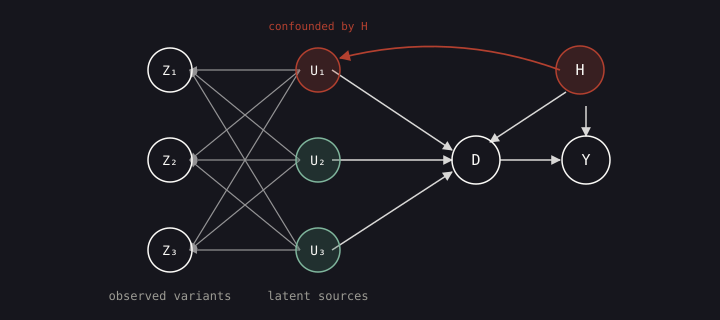
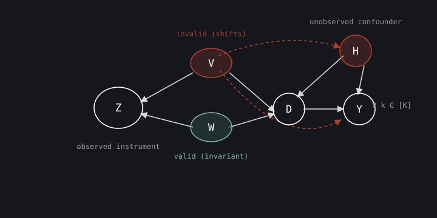

Addressing Instrument–Outcome Confounding in Mendelian Randomization through Representation Learning
Recovering the invariant, exogenous part of a confounded genetic instrument by learning what stays stable across populations
Mendelian Randomization (MR) uses genetic variants as instruments to estimate causal effects from observational data, but its core assumptions — especially the independence between instruments and unobserved confounders — are routinely broken by population stratification and assortative mating. Leveraging the growing availability of multi-environment biobank data, this work proposes a representation-learning framework that exploits cross-environment invariance to recover the latent exogenous component of a confounded genetic instrument. It provides identifiability guarantees for recovering these latent instruments under several mixing mechanisms, and demonstrates effective bias correction in simulations and in semi-synthetic experiments built from the All of Us Research Hub.
The problem with genetic instruments
When randomized trials are infeasible or unethical, epidemiologists turn to Mendelian Randomization (MR): an instrumental-variable (IV) method (Angrist et al. 1996) that uses genetic variants as instruments for a risk factor, exploiting the fact that alleles are (in principle) assigned at conception independently of later-life confounders (Sanderson et al. 2022). A variable Z is a valid instrument for an exposure D with respect to an outcome Y, in the presence of an unobserved confounder H, when it satisfies three conditions:
- Relevance — Z is associated with D;
- Exchangeability — Z \perp H;
- Exclusion restriction — Z \perp Y \mid H, D.
The trouble is that in real genetic data the exchangeability condition is routinely violated. Population stratification and assortative mating make genetic variants and phenotypes share ancestry- and environment-driven influences, so the variant is no longer independent of the confounder, and the MR estimate is biased.
A worked example makes the failure concrete. Suppose we want the average causal effect (ACE) of type II diabetes (D) on coronary artery disease (Y), both confounded by unobserved population-level factors H. The candidate instruments Z = (Z_1, Z_2, Z_3) are each a mixture of latent sources U = (U_1, U_2, U_3): U_2 and U_3 are stochastic recombination governed by Mendel’s law (valid), while U_1 is driven by population factors H (invalid). Because every observed variant mixes in a little of the invalid U_1, all of Z_1, Z_2, Z_3 become invalid instruments — even though two clean instruments are hiding inside.

If we could recover the latent variables U from the observed Z, we would get back two valid instruments. That recovery problem is exactly an identification problem in representation learning — and it is the heart of the paper.
A multi-environment setup
The key resource is that the same traits can now be studied across many populations: large biobanks such as All of Us (The All of Us Research Program Investigators 2019) make multi-environment data available. The underlying causal biology is shared across populations, but allele frequencies and linkage-disequilibrium structure differ by demographic history. So an observed variant can be read as a mixture of an invariant biological signal and an environment-specific confounding component.
The paper formalizes this. Across K environments one observes i.i.d. data \mathcal{D}_k = \{(Z_i^{(k)}, D_i^{(k)}, Y_i^{(k)})\}, where the candidate instrument is generated through an invertible mixing function Z^{(k)} = f(W^{(k)}, V^{(k)}) from two independent latent blocks:
- W^{(k)} — the valid part: W^{(k)} \perp H^{(k)}, and its distribution is invariant across environments;
- V^{(k)} — the invalid part: V^{(k)} depends on H^{(k)}, and its distribution shifts across environments.
So while Z^{(k)} is invalid (because of V), there exists a map \varphi:\mathcal{Z}\to\mathbb{R}^p — the inverse of f onto the W coordinates — such that \varphi(Z^{(k)}) is a valid instrument.

Why recovering W up to a transformation is enough. Disentanglement does not remove the confounding between D and Y — that is what the instrument is for. It only recovers a clean instrument W so that IV machinery can be applied correctly.
The central object is the IV moment restriction: with the true causal parameter \theta_0,
\mathbb{E}\!\left[\varphi_0(Z)\,(Y - D^\top \theta_0)\right] = 0,
which, together with a rank condition, identifies \theta_0 when \varphi_0 is known. A crucial convenience from representation-learning theory is that we don’t need \varphi_0 exactly: any bijective transformation of a valid instrument is still a valid instrument, and any rank-preserving affine transformation of an identifying instrument still identifies \theta_0. This is exactly what representation learning can deliver — recovery up to a transformation — so the loose guarantees of disentanglement are tight enough for valid causal inference.
Identifying the invariant component
The recovery is driven by distributional invariance. The paper trains an autoencoder (m_{\text{en}}, m_{\text{de}}) that reconstructs Z, and requires the first \hat{p} encoder coordinates to have a distribution that is stable across environments:
\forall\, k, k' \in [K], \quad m_{\text{en}}(Z^{(k)})^{:\hat{p}} \stackrel{d}{=} m_{\text{en}}(Z^{(k')})^{:\hat{p}}.
Reconstruction forces the representation to preserve the information in Z; invariance forces the first block to track the environment-stable signal. Under injective polynomial mixing and a modular, sufficiently-variable shift in the distribution of V, the result is clean:
If \hat{p} \ge p, the encoder’s first \hat{p} coordinates perfectly identify W, recovering it up to an affine transformation m_{\text{en}}(Z^{(k)})^{:\hat{p}} = A\,W^{(k)} + a. If \hat{p} < p, W is partially identified (recovered up to a linear projection).
The paper notes its assumptions are weaker than prior multi-environment causal representation learning (Ahuja et al. 2024): it does not require an additive-noise SCM over the latents or that interventions act only on exogenous noise, and it explicitly works out what happens when the latent dimension is misspecified. It also connects to the invariance-principle view of representation learning (Yao et al. 2025) and to the broader identifiability literature (Khemakhem et al. 2020; Locatello et al. 2019), while contrasting with earlier learned-representation IV methods that lacked recovery guarantees (Cheng et al. 2024a, 2024b).
The invalid block V is harder: it is not identifiable in general, even when W is perfectly recovered. Under polynomial mixing, adding an independence constraint between the two encoder blocks recovers both W and V up to affine transformations.
In practice the autoencoder minimizes a weighted sum of a reconstruction loss, an invariance loss, and an independence loss; the paper uses Maximum Mean Discrepancy (Gretton et al. 2012) for invariance and the Hilbert–Schmidt Independence Criterion (Gretton et al. 2005) for independence, with a term that discourages representation collapse.
Good and bad uses of the learned representation
Once W is the instrument, what about V? Because V is correlated with Y (through H) but independent of W, in the ideal case where the true latents are observed it is a valid adjustment covariate: partialling it out reduces the asymptotic variance of the IV estimator. But with learned proxies \widehat{W}, \widehat{V} two risks appear:
- Efficiency loss via information leakage — if disentanglement is imperfect, \widehat{V} may absorb part of W, weakening the first stage and inflating variance.
- Bias via a collider — if the independence constraint fails, \widehat{V} can become a function of both W and H; conditioning on it opens a backdoor path and biases the estimator.
This is why the independence constraint is not optional for the variance-reduction trick: recovering W for plain IV needs invariance, but safely using V needs independence too.
Experiments
Semi-synthetic, from All of Us. The authors extract 652 genetic variants in the GLP1R region from individuals of East Asian and African predicted ancestry (8000 individuals per population), apply ICA to reduce to 10 latent components, pick the component with the strongest cross-population shift as the confounder V, and resample the rest as the invariant W — then map back to SNP space so the genotypes keep realistic LD but carry controlled stratification. A two-dimensional exposure D and scalar outcome Y follow a linear SCM with an unobserved confounder H copied from V; the procedure is repeated over 20 seeds.
Training the autoencoder with \lambda_1 = \lambda_2 = 10, two estimators are built on the learned representation: \text{2SLS}(\widehat{W}) and the partialling-out variant \text{PO}(\widehat{V})\text{-2SLS}(\widehat{W}). They are compared against naive \text{2SLS}(Z), MR-Egger (Bowden et al. 2015), and their population-label-adjusted counterparts \text{PO}(K)\text{-2SLS}(Z) and \text{PO}(K)\text{-Egger}(Z).
The reported qualitative findings (the paper presents these as box-plots of bias over the 20 seeds):
| Estimator | What it uses | Reported bias behaviour |
|---|---|---|
| \text{2SLS}(\widehat{W}) (ours) | learned invariant instrument | bias centred near zero |
| \text{PO}(\widehat{V})\text{-2SLS}(\widehat{W}) (ours) | learned instrument + adjustment | bias near zero, tighter variance |
| \text{2SLS}(Z) | raw observed instrument | large bias (up to 0.3) |
| \text{Egger}(Z) | raw observed instrument | large bias |
| \text{PO}(K)\text{-2SLS}(Z) | raw + population label | bias reduced but not eliminated |
| \text{PO}(K)\text{-Egger}(Z) | raw + population label | bias reduced but not eliminated |
Two messages stand out. First, partialling out the discrete population label (\text{PO}(K)) helps but does not remove the bias, showing the confounding is more than a mean shift between populations. Second, the partialling-out estimator that adjusts for the learned \widehat{V} has visibly tighter variance than plain \text{2SLS}(\widehat{W}) — the predicted efficiency gain.
Fully-synthetic ablations. With p = q = 2 and noise drawn from correlated Gaussians, the authors vary the mixing function across polynomials of degree 1–3 (giving d_Z \in \{5, 15, 35\}) and an invertible MLP (d_Z = 4):
- Mixing mechanism. Both proposed estimators stay at low or near-zero bias across all four mixing functions, while every baseline shows large bias — standard IV and population-adjusted variants fail once the mixing is non-linear or the invalidity is latent rather than a discrete label.
- Misspecified dimension. With the true p = 2 and degree-3 polynomial mixing, under-specifying \hat{p} \in \{1, 2\} keeps bias small (a linear projection of W suffices for valid IV), but over-specifying to \hat{p}=4 raises both bias and variance as the model leaks information from V — so a conservative dimension is preferable when the instrument is still strong.
- Independence loss. With the independence loss, both estimators are unbiased. Without it (\lambda_2 = 0), \text{2SLS}(\widehat{W}) stays largely unbiased but \text{PO}(\widehat{V})\text{-2SLS}(\widehat{W}) picks up significant bias, worst under the complex Poly-3 and MLP mixings — confirming that the adjustment trick requires disentanglement.
Why it matters
The paper reframes a long-standing epidemiological headache — invalid instruments from population structure — as a causal representation learning problem, and shows that cross-environment invariance is enough to recover the exogenous part of a confounded instrument up to a transformation that downstream IV estimation can absorb. The honest accounting of when the learned invalid component helps (variance reduction) versus hurts (leakage, collider bias) is the practical payoff. Limitations the authors flag: the guarantees rest on a sufficient-variability assumption whose finite-sample testing is open, and high-dimensional genetic settings would benefit from sparsity in the encoder. They also note the framework extends from multi-environment to multi-view data, where a contrastive objective such as InfoNCE (Oord et al. 2018) could replace the MMD invariance loss.
Full references appear in the margin and below; a copyable BibTeX entry for this paper is generated automatically.
Citation
@article{huang2026,
author = {Huang, Shimeng and Robinson, Matthew and Locatello,
Francesco},
title = {Addressing {Instrument–Outcome} {Confounding} in {Mendelian}
{Randomization} Through {Representation} {Learning}},
journal = {arXiv preprint},
date = {2026-02-23}
}